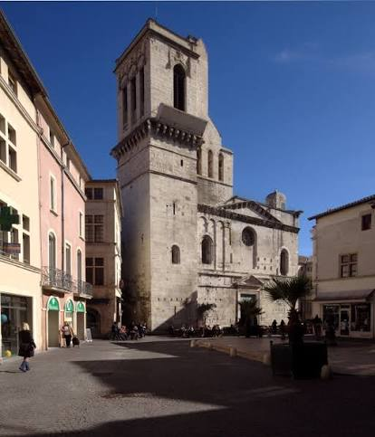

Cathédrale
Saint-Castor


⟹ Édifices religieux ⟸
Une cathédrale au cœur de la vieille ville. La cathédrale Notre-Dame-et-Saint-Castor domine la place aux Herbes, dans le centre historique de Nîmes, à quelques pas de l’ancien palais épiscopal. Elle occupe un secteur de la ville antique de Nemausus ; une tradition ancienne, difficile à vérifier, place même sous ses fondations un temple romain.
Un siège épiscopal très ancien. Le christianisme s’implante à Nîmes à la fin de l’Antiquité et l’évêché est attesté dès cette époque : un concile s’y réunit à la fin du IVe siècle. Un premier groupe épiscopal existe probablement à l’emplacement de l’édifice actuel, mais ses états successifs du haut Moyen Âge restent mal connus.

La consécration de 1096. L’édifice roman est consacré en 1096 par le pape Urbain II, qui parcourt alors le Midi pour prêcher la première croisade et consacre plusieurs grandes églises de la région, dont Saint-Nazaire de Béziers. La cathédrale est probablement achevée au cours du XIIe siècle.
Notre-Dame et saint Castor. La cathédrale est d’abord dédiée à la Vierge. Le vocable de saint Castor lui est associé en l’honneur d’un évêque d’Apt du Ve siècle que la tradition fait naître à Nîmes. Cette double dédicace rappelle l’attachement de la ville à ses saints locaux.
Une façade romane exceptionnelle. L’édifice conserve une façade romane à arcatures lombardes, un grand fronton triangulaire et une longue frise sculptée consacrée à des épisodes de l’Ancien Testament, depuis la Création et le péché d’Adam et Ève jusqu’aux récits de Caïn et Abel et de Noé. Ces bas-reliefs du XIIe siècle, inspirés par l’art antique encore très présent à Nîmes, constituent un témoignage majeur de la sculpture romane méridionale.
Le clocher, repère de la ville. Le clocher carré, élevé sur le flanc de la façade, est l’un des éléments les plus anciens et les plus visibles de l’ensemble. Il a traversé les destructions successives et reste, avec la frise, le principal témoin de l’édifice médiéval.
Nîmes, ville de la Réforme. Au XVIe siècle, la Réforme gagne une grande partie de la population nîmoise, qui devient l’un des principaux foyers protestants du royaume. La cathédrale se retrouve au cœur des affrontements entre catholiques et réformés qui marquent durablement l’histoire de la ville.
La Michelade de 1567. Le 29 septembre 1567, jour de la Saint-Michel, des protestants nîmois massacrent plusieurs dizaines de catholiques, notables et ecclésiastiques ; des corps sont jetés dans le puits de la cour de l’évêché, tout proche. L’épisode, appelé la « Michelade », reste l’un des plus sombres des guerres de Religion en Languedoc.
Un monument mutilé puis reconstruit. Pillée et en partie démolie lors des troubles du XVIe siècle puis des soulèvements protestants des années 1620, la cathédrale perd la majeure partie de ses structures romanes. La nef est reconstruite au XVIIe siècle, tandis que les sculptures endommagées de la frise sont complétées ou refaites dans un esprit proche de l’original.
Le temps de la Contre-Réforme. Après la révocation de l’édit de Nantes en 1685, l’Église catholique cherche à reconquérir une ville restée largement protestante. Le palais épiscopal voisin est reconstruit à la fin du XVIIe siècle, et l’évêque Esprit Fléchier, prédicateur célèbre et membre de l’Académie française, gouverne le diocèse de 1687 à 1710.
Révolution et Concordat. Sous la Révolution, la cathédrale est fermée au culte et utilisée à d’autres fins. Le Concordat de 1801 supprime le diocèse de Nîmes, rattaché à celui d’Avignon, avant qu’il ne soit rétabli en 1821. Le diocèse porte aujourd’hui le nom de Nîmes, Uzès et Alès, rappelant les anciens évêchés réunis.
La restauration d’Henri Révoil. Au XIXe siècle, l’architecte diocésain Henri Révoil conduit une importante campagne de travaux. L’intérieur est largement repris dans un style néo-roman et néo-byzantin, avec un nouveau chœur et des décors peints qui donnent à la cathédrale l’essentiel de son aspect intérieur actuel.
Un monument historique. La cathédrale est classée au titre des Monuments historiques en 1906. Le palais épiscopal voisin abrite aujourd’hui le musée du Vieux Nîmes, qui prolonge la découverte de l’histoire de ce quartier.
Une restauration contemporaine. Depuis plusieurs années, la cathédrale fait l’objet d’importants travaux. La façade occidentale, sa frise sculptée et le clocher ont bénéficié d’un vaste chantier de restauration, achevé dans sa phase principale en 2025, qui a rendu leur lisibilité aux reliefs romans.
Le quartier cathédral et la ville médiévale. Autour de la place aux Herbes se concentraient les fonctions religieuses et une part de la vie urbaine : cathédrale, résidence épiscopale, maisons canoniales et espaces de marché. La cathédrale n’était pas seulement un lieu de célébration ; elle constituait aussi un repère dans la topographie et les cérémonies de la cité.
Un édifice à lire par couches successives. La façade occidentale ne doit pas être confondue avec un monument entièrement conservé du XIIe siècle. Les destructions des guerres de Religion, les reconstructions classiques et les restaurations ultérieures y ont laissé leurs traces. L’observation des matériaux, des reprises de maçonnerie et des sculptures permet de distinguer plusieurs campagnes de travaux.
La frise : un récit biblique en pierre. Les épisodes de la Genèse se déploient sous le fronton de la façade. Le récit sculpté remplissait une fonction religieuse et pédagogique, tout en manifestant le savoir-faire des ateliers romans. Plusieurs reliefs ont été restaurés ou refaits au XVIIe siècle : leur aspect actuel témoigne donc à la fois de l’art médiéval et de sa réception à l’époque moderne.
Le XVIIe siècle et l’évêque Cohon. Sous l’épiscopat de Claude de Cohon, dans les années 1630-1640, la reconstruction donne à la cathédrale une organisation largement classique. La nef et ses chapelles latérales surmontées de tribunes appartiennent à cette grande phase de réaménagement, qui répond au retour du culte catholique dans une ville profondément marquée par les conflits confessionnels.
Le portail et les décors du XIXe siècle. Le portail néoclassique à fronton triangulaire date de 1822. Entre 1877 et 1882, Henri Révoil transforme fortement l’espace intérieur dans un vocabulaire romano-byzantin ; les vitraux réalisés par Édouard Didron en 1882 participent de ce nouvel ensemble. La visite met ainsi en regard une façade médiévale et un intérieur largement réinterprété au XIXe siècle.
Les œuvres conservées. L’intérieur renferme notamment un grand orgue dont le buffet remonte à 1643, ainsi que des œuvres peintes et des monuments funéraires liés à l’histoire du diocèse. Ces éléments rappellent que l’histoire d’une cathédrale se lit aussi dans son mobilier, ses commandes artistiques et les transformations de sa liturgie.
Les restaurations et les métiers du patrimoine. Le chantier engagé en 2022 a mobilisé tailleurs de pierre, restaurateurs de sculptures, maîtres-verriers, spécialistes des cloches, architectes et archéologues. Après les interventions sur le clocher, la frise a notamment bénéficié en 2024 d’un nettoyage au laser. Les travaux sur la couverture du narthex ont prolongé cette campagne en 2025 ; les observations archéologiques enrichissent la connaissance des différentes phases de l’édifice.
Pour approfondir. Les publications de la Direction régionale des affaires culturelles d’Occitanie documentent la restauration récente, tandis que le volume « Occitanie, terre de cathédrales » du ministère de la Culture décrit l’architecture et les œuvres de Saint-Castor. Consulter le dossier du ministère de la Culture ↗.
Une mémoire de pierre nîmoise. Saint-Castor résume à elle seule une grande partie de l’histoire de Nîmes : héritage antique, puissance de l’évêché médiéval, déchirements des guerres de Religion, reconquête catholique, restaurations du XIXe siècle et sauvegarde patrimoniale. Sa frise romane en fait l’un des témoins les plus précieux de l’art médiéval du Languedoc.